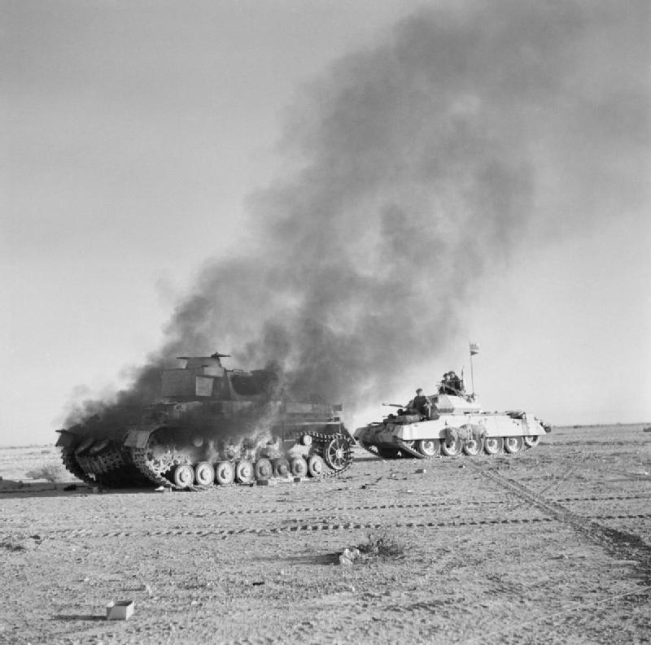
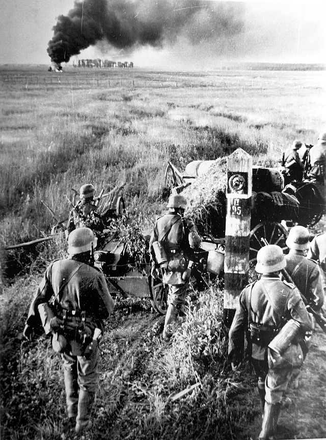

Oorlog in Afrika
 Italie begon mee te doen aan de oorlog aan de kant van Duitsland na de val van Frankrijk. Italie had kolonies in Noord-en-Oost-Afrika. Mussolini, de dictator van Italie, wilde een groot Italiaans rijk maken, verlangen naar de tijd van het Romeinse Rijk. Zijn verlangens waren al snel vertrapt door de Britten die al snel veel winst boekten in het noorden en oosten. Hitler zond Duits generaal Erwin Rommel naar Noord-Afrika om de Italianen te helpen. Dit maakte het al een stuk lastiger voor de Britten. Rommel was erg gespecialiseerd in het gebruik van tanks. De Duitse interesse in Noord-Afrika was vanwege de olievelden. De Duitse olievoorad begon op te raken.
Operatie Barbarossa
 Op 22 juni 1941 viel Duitsland, gesteund door Italië, Roemenië, Hongarije en Finland de Sovjet-Unie binnen tijdens Operatie Barbarossa, waarbij Duitsland de Sovjets beschuldigde van samenzwering tegen hen. De belangrijkste doelen van dit verrassingsoffensief waren de Baltische regio, Moskou en Oekraïne, met als uiteindelijk doel het beëindigen van de campagne van 1941 nabij de lijn Arkhangelsk-Astrachan, van de Kaspische Zee tot de Witte Zee. Hitler's doelstellingen waren om de Sovjet-Unie als militaire macht te elimineren, het communisme uit te roeien, Lebensraum te creeeren door de inheemse bevolking uit te moorden en toegang te garanderen tot de strategische middelen die nodig zijn om de resterende rivalen van Duitsland te verslaan.
Pearl Harbor
 Japan was van plan om snel Europese koloniën in Azië te veroveren om een grote verdedigingsperimeter te creëren die zich uitstrekte tot in de centrale Stille Oceaan.
De Japanners zouden dan vrij zijn om de hulpbronnen van Zuidoost-Azië te exploiteren, terwijl ze de overbelaste geallieerden uitputten door een defensieve oorlog te voeren.
Om Amerikaanse interventie te voorkomen en tegelijkertijd de perimeter veilig te stellen, was het verder de bedoeling om van meet af aan de Amerikaanse Pacific Fleet en de Amerikaanse militaire aanwezigheid in de Filippijnen te neutraliseren.
Op 7 december 1941 viel Japan Britse en Amerikaanse bezittingen aan met bijna gelijktijdige offensieven tegen Zuidoost-Azië en de Centrale Stille Oceaan.
Deze omvatten een aanval op de Amerikaanse vloten in Pearl Harbor en de Filippijnen, Guam, Wake Island, landingen in Malaya, Thailand en de Slag om Hong Kong.
Japan was van plan om snel Europese koloniën in Azië te veroveren om een grote verdedigingsperimeter te creëren die zich uitstrekte tot in de centrale Stille Oceaan.
De Japanners zouden dan vrij zijn om de hulpbronnen van Zuidoost-Azië te exploiteren, terwijl ze de overbelaste geallieerden uitputten door een defensieve oorlog te voeren.
Om Amerikaanse interventie te voorkomen en tegelijkertijd de perimeter veilig te stellen, was het verder de bedoeling om van meet af aan de Amerikaanse Pacific Fleet en de Amerikaanse militaire aanwezigheid in de Filippijnen te neutraliseren.
Op 7 december 1941 viel Japan Britse en Amerikaanse bezittingen aan met bijna gelijktijdige offensieven tegen Zuidoost-Azië en de Centrale Stille Oceaan.
Deze omvatten een aanval op de Amerikaanse vloten in Pearl Harbor en de Filippijnen, Guam, Wake Island, landingen in Malaya, Thailand en de Slag om Hong Kong.